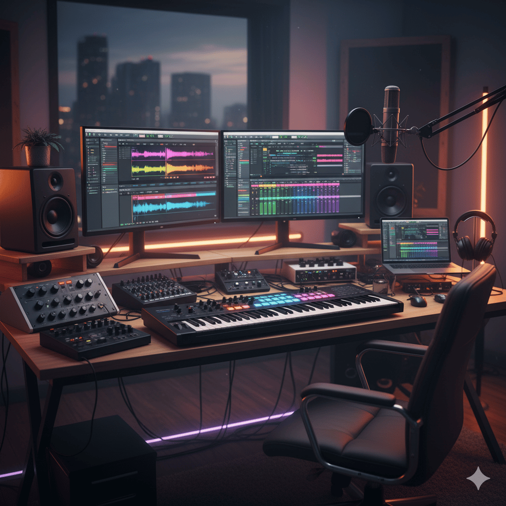

Hast du jemals davon geträumt, deine eigene Musik zu kreieren, Klänge zu formen und Emotionen in Melodien zu gießen? Die Welt der Musikproduktion war noch nie so zugänglich wie heute. Mit der richtigen Software, etwas Hardware und viel Kreativität kannst du dein eigenes Studio direkt in deinem Schlafzimmer einrichten. Dieser Guide nimmt dich mit auf eine Reise von der ersten Idee bis zum fertigen Track und hilft dir, die Grundlagen zu verstehen, um deine musikalischen Visionen zu verwirklichen.
Das Herzstück deines Studios: Die DAW
Die Digital Audio Workstation (DAW) ist die zentrale Software für deine Musikproduktion. Hier nimmst du auf, arrangierst, bearbeitest und mischst deine Spuren. Es gibt eine Vielzahl von DAWs, jede mit ihren eigenen Stärken und einer engagierten Community:
- **Ableton Live:** Bekannt für seine Performance-Fähigkeiten und seinen intuitiven Workflow, besonders bei elektronischer Musik.
- **Logic Pro X (Mac):** Eine leistungsstarke DAW mit vielen integrierten Instrumenten und Effekten, ideal für Einsteiger und Profis.
- **FL Studio:** Sehr beliebt in der Hip-Hop- und EDM-Produktion, bekannt für seinen schnellen Workflow.
- **Cubase:** Eine etablierte DAW, die in vielen professionellen Studios verwendet wird und für ihre Mixing- und Editing-Fähigkeiten geschätzt wird.
- **Reaper:** Eine kostengünstige und extrem anpassbare Option, ideal für Budget-bewusste Produzenten.
Beginne am besten mit einer kostenlosen Testversion oder einer Einsteiger-Version, um herauszufinden, welche DAW am besten zu deinem Arbeitsstil passt. Investiere Zeit in Tutorials und die Einarbeitung, denn die DAW ist dein wichtigstes Instrument.
Die nötige Hardware: Dein akustisches Werkzeugset
Für den Anfang benötigst du nicht viel, aber einige grundlegende Hardware-Komponenten werden dein Setup erheblich verbessern:
- **Audio-Interface:** Eine externe Soundkarte, die die Klangqualität deiner Aufnahmen und Wiedergabe verbessert und den Anschluss von Mikrofonen und Instrumenten ermöglicht.
- **Studiomonitore oder Kopfhörer:** Spezielle Lautsprecher oder Kopfhörer, die einen unverfälschten Klang liefern, sind entscheidend für präzises Mischen. Normale Consumer-Geräte färben den Sound oft.
- **MIDI-Keyboard/Controller:** Ermöglicht dir das Einspielen von virtuellen Instrumenten in deiner DAW. Auch wenn du kein Pianist bist, erleichtert es das Experimentieren mit Melodien und Akkorden.
- **Mikrofon (optional):** Wenn du Gesang, akustische Instrumente oder eigene Sounds aufnehmen möchtest. Ein Kondensatormikrofon ist ein guter Allrounder.
Starte klein und erweitere dein Setup schrittweise, je nachdem, welche Art von Musik du produzieren möchtest und welche Anforderungen du hast. Auch ein gut klingender Raum ist Gold wert – kleine akustische Behandlungen können Wunder wirken.
Der kreative Prozess: Von der Idee zum Arrangement
Musikproduktion ist ein kreativer Prozess, der oft in Phasen abläuft:
- **Ideenfindung (Songwriting):** Starte mit einer Melodie, einem Beat, einem Akkordprogresion oder einer Textidee. Nimm alles auf, was dir in den Sinn kommt – auch wenn es nur eine einfache Skizze ist.
- **Arrangement:** Dies ist der Prozess, in dem du deine Ideen strukturierst. Baue einen Songaufbau auf (Intro, Strophe, Refrain, Bridge, Outro). Überlege, welche Instrumente wann einsetzen, wie sich die Dynamik entwickelt und welche Geschichte dein Song erzählen soll.
- **Sound Design:** Wähle die richtigen Sounds für deine Instrumente. Nutze Synthesizer, Samples oder VST-Instrumente (virtuelle Instrumente in deiner DAW). Die Wahl der Sounds hat einen massiven Einfluss auf die Stimmung deines Tracks.
- **Recording (falls zutreffend):** Nimm Gesang, Gitarren, Bässe oder andere akustische Instrumente auf. Achte auf eine saubere Aufnahmequalität und minimiere Hintergrundgeräusche.
Sei nicht perfektionistisch in den Anfangsphasen. Es geht darum, Ideen festzuhalten und fließen zu lassen. Das Feintuning kommt später.
Mixing: Balance und Klarheit im Klang
Das Mixing ist der Schritt, bei dem du alle einzelnen Spuren so anpasst, dass sie im Gesamtbild gut zusammenklingen. Das Ziel ist, jedem Element seinen Platz im Frequenzspektrum und im Stereofeld zu geben, sodass nichts kollidiert oder untergeht. Wichtige Werkzeuge sind:
- **Volume (Lautstärke):** Die grundlegendste Einstellung. Sorge für eine ausgewogene Lautstärke aller Spuren.
- **Panning:** Positioniere Sounds im Stereofeld (links/rechts), um dem Mix Breite zu verleihen.
- **EQ (Equalizer):** Schneidet unerwünschte Frequenzen ab und betont andere, um Sounds klarer zu machen und Konflikte zu vermeiden.
- **Compression:** Reduziert den Dynamikbereich eines Signals, um es gleichmäßiger und druckvoller klingen zu lassen.
- **Reverb & Delay:** Fügen Raum und Tiefe hinzu. Setze sie sparsam ein, um den Mix nicht zu "verschmieren".
Ein guter Mix braucht Zeit und Übung. Vergleiche deinen Mix regelmäßig mit Referenz-Tracks, die dir gefallen, um ein Gefühl für Balance zu entwickeln.
Mastering: Der letzte Schliff für den perfekten Sound
Mastering ist der letzte technische Schritt, bevor deine Musik veröffentlicht wird. Hier wird dein gemischter Track für die Veröffentlichung optimiert, um eine konsistente Lautstärke, Klarheit und Fülle zu gewährleisten, die auf verschiedenen Wiedergabesystemen gut klingt. Typische Mastering-Prozesse umfassen:
- **Lautstärke-Optimierung (Limiting):** Anhebung der Gesamtlautstärke auf kommerzielle Standards, ohne zu übersteuern.
- **EQ-Anpassungen:** Feine Korrekturen im Frequenzbereich, um den Gesamtsound auszubalancieren.
- **Stereo-Enhancement:** Verbesserung der Stereobreite und des Tiefenraums.
- **Dithering:** Reduzierung von digitalem Rauschen bei der Konvertierung in niedrigere Bit-Tiefen.
Mastering ist eine Kunst für sich und wird oft von spezialisierten Audioingenieuren durchgeführt. Für den Anfang gibt es jedoch auch gute Mastering-Plugins oder Online-Dienste, die dir helfen können, einen kommerziell klingenden Sound zu erreichen.
Die Reise geht weiter: Üben, Lernen, Teilen
Musikproduktion ist eine ständige Lernkurve. Sei geduldig mit dir selbst, experimentiere, höre aktiv zu und scheue dich nicht, Fehler zu machen. Schau dir Tutorials an, lies Artikel, tausche dich mit anderen Produzenten aus und analysiere deine Lieblingssongs, um zu verstehen, wie sie aufgebaut sind.
Und vor allem: Hab Spaß! Lass deine Kreativität fließen und genieße den Prozess, deine musikalischen Ideen in die Realität umzusetzen. Vielleicht ist der nächste große Hit ja schon in deinem Kopf – warte nur darauf, dass du ihn in deinem KatzenKlangStudio zum Leben erweckst!
Zurück zur Startseite